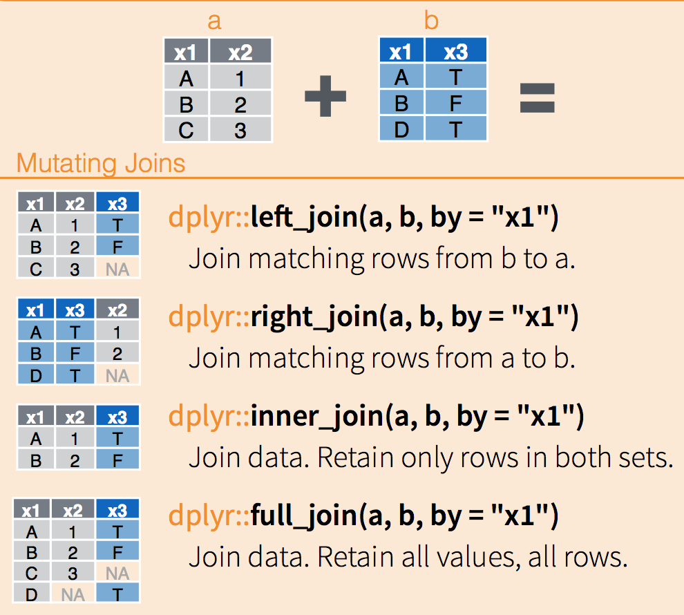
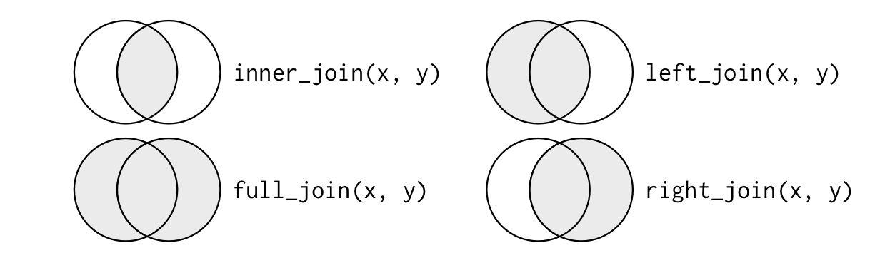

repaso de la clase anterior
lectura/escritura
“read_csv()” lee un archivo delimitado por comas.
read_csv(readr_example("mtcars.csv"))
read_csv(readr_example("mtcars.csv.zip"))
read_csv(readr_example("mtcars.csv.bz2"))
read_csv("https://github.com/tidyverse/readr/raw/master/inst/extdata/mtcars.csv")
Se pueden controlar cosas como col_types, col_names, delim, skip, n_max, y otros.
Existe una “write_csv” equivalente.
Piping con Magrittr y operador %>%
x %>% f en vez de f(x) # el valor de x se direcciona a f()
x %>% f(., arg2, arg3) # por default pasa al 1er argumento
x %>% f(arg2, arg3) # por lo tanto, puede obviarse el punto
x %>% f(arg1, ., arg3) # puede usarse el punto para direccionar a otro lado
mean_by_state %>% # mi data.frame
mutate(frac = mean/overall_mean) %>% # creo la columna frac
filter(frac >= 1) %>% # filtro la columna frac
arrange(desc(frac)) # ordeno de mayor a menor
combinando data.frames (sin llaves)

combinando data.frames (con llaves)


- miren con cuidado el cheat-sheet de dplyr
repaso práctica 4
- Entrar en Buenos Aires Data (ver link en la web del curso)
- Ir a datos de Contaminación sonora
- Bajar csv's de Torres y Mediciones 2011, 2012 y 2013
- Cargar todo en R
- Hacer un gran data.frame con TMI y las tres mediciones
- Cuales son los 5 barrios en donde hay más (menos) promedio energético hora?
- Cómo se comparan los valores extremos con la media de todos los barrios?
hacer gran-dataframe-gran
library(dplyr)
library(readr)
tmi <- read_csv("~/Downloads/torres-de-monitoreo-inteligente.csv")
## Parsed with column specification:
## cols(
## TMI = col_integer(),
## BARRIO = col_character(),
## DIRECCION = col_character()
## )
## > tmi
## # A tibble: 16 × 3
## TMI BARRIO DIRECCION
## <int> <chr> <chr>
## 1 1282 Mataderos Av. Eva Perón 5251
## 2 1283 Liniers Lisandro de la Torre 39
## 3 1284 Vélez Sarsfield Av. Segurola 726
m2011 <- read_csv2("~/Downloads/mediciones-2011.csv")
m2012 <- read_csv2("~/Downloads/mediciones-2012.csv")
m2013 <- read_csv2("~/Downloads/mediciones-2013.csv")
# construyo data.frame
ruido_bsas <- bind_rows(m2011, m2012, m2013)
ruido_bsas <- left_join(ruido_bsas, tmi)
Ruidosos? Tranquilos?
# 5 barrios más (menos) ruidosos
ruido_barrios <- ruido_bsas %>%
group_by(BARRIO) %>%
summarise(ruido_avg = mean(PROMEDIO_ENERGETICO_HORA, na.rm = TRUE)) %>%
arrange(desc(ruido_avg))
# pregunta: de dónde viene el NA? (Assumptions...)
ruido_barrios %>% head(n=5) # o tail(n=5) para ver los menos ruidosos
Extremos vs. media?
# como se comparan los valores extremos y la media
ruido_barrios %>% summary # o más elegante: ruido_barrios %>% select(ruido_avg) %>% summary
## también funciona esto:
## ruido_barrios %>% summarise(mean(ruido_avg))
## ruido_barrios %>% summarise(max(ruido_avg))
## ruido_barrios %>% summarise(min(ruido_avg))
59.79/70.49
# [1] 0.8482054
74.94/70.49
# [1] 1.06313
RStudio
-
Working directory / Workspace
getwd() # para saber donde estoy setwd("path/to/dir") # para decirle donde quiero estar - Proyectos: Conjunto de archivos que van juntos: miproyecto.Rproj, .RData, .Rsession, etc
- Cómo grabo lo que hago?
- abrir un proyecto nuevo y grabar después
- grabar en algún directorio y después decirle que haga un proyecto ahí
- sin proyectos, gestionar todo uno mismo (no muy recomendado)
- <https://support.rstudio.com/hc/en-us/articles/200526207-Using-Projects>
- Usen atajos de teclado! Ver machete de RStudio (cheatsheet) en Slack
Funciones
Una función tiene como propósito encapsular y automatizar tareas que se repetirón, posiblemente
sobre objetos distintos cada vez. Por ejemplo, la función \`read\_csv\` o \`plot\` contiene código que no
querríamos escribir cada vez que queremos cargar datos de un archivo csv o hacer un gráfico. A su
vez, con ellas podemos cargar datos de cualquier archivo csv o hacer cualquier gráfico.
Más información en <http://r4ds.had.co.nz/functions.html>.
anatomía de f()
# mi función se llama alta_funcion, con dos argumentos
alta_funcion <- function(arg1 = 10, arg2 = TRUE, ...){
# acá empieza mi código
library(paquete_externo)
x <- funcion_externa(arg_ext = arg1)
...
alto código
código y más código
...
alto_resultado <- mansa_funcion(arg2) # genero alto_resultado
return(alto_resultado) # devuelvo alto resultado
}
# llamo a mi función de distintas maneras
x_default <- alta_funcion() # uso arg1 = 10 y arg2 = TRUE
x_100_F <- alta_funcion(100, FALSE)
x_200_T <- alta_funcion(200, TRUE)
mi_var <- alta_funcion(arg2 = FALSE, arg_ext = 10.2) # uso arg1 = 10
ejemplo
# función que normaliza de dos maneras distintas un vector de valores
normaliza_vector <- function(vector = c(10, 9, 8, 7, 6), square_root = FALSE){
if(square_root == TRUE) N <- sum(vector^2)^(1/2)
else N <- sum(vector)/length(vector) # ojo, da error si vector está vacio
if(N != 0) return(vector/N)
else print("error: Norma igual a cero!")
}
# distintas maneras de llamar la función
normaliza_vector() # con los argumentos por default
# [1] 1.250 1.125 1.000 0.875 0.750
x <- c(10, 9, 8, 7 , 6) # c() es una función que toma N argumentos y devuelve un vector
normaliza_vector(x) # haciendo explícito el vector
# [1] 1.250 1.125 1.000 0.875 0.750
y <- c(1, 2, 3)
normaliza_vector(y) # un vector diferente
# [1] 0.5 1.0 1.5
normaliza_vector(y, TRUE) # usando la norma euclidiana
# [1] 0.2672612 0.5345225 0.8017837
La idea de las funciones es que vamos escribiendo código y que, cuando funciona, lo metemos dentro
de la función. Luego se puede ir extendiendo a medida que se va necesitando (por ejemplo, agregando
argumentos, etc).
Es más fácil escribir una función a partir de código que ya sabemos que funciona que sentarse a
escribir una función de cero.
Práctica 5
- Trabajamos sobre datos de ruido de Buenos Aires Data. Escribir una función que devuelva el min, máx y promedio (mean) del ruido dependiendo del barrio.
- Porqué obtengo un
NAen los resultados de la práctica 4?- Usar lo aprendido sobre joins para no tener este
NA.
- Usar lo aprendido sobre joins para no tener este
- Cómo puedo mejorar la columna FECHA de la práctica 3? Consejo: usar el paquete
stringrmástidyr::separate. - Cuál es la hora de mayor ruido del día? Cuál es el dia más ruidoso de la semana? Hay algún barrio con más ruido el fin de semana que el resto?